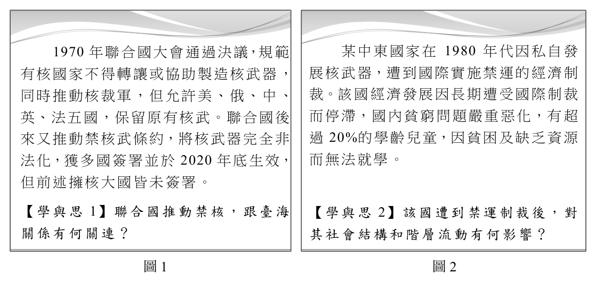
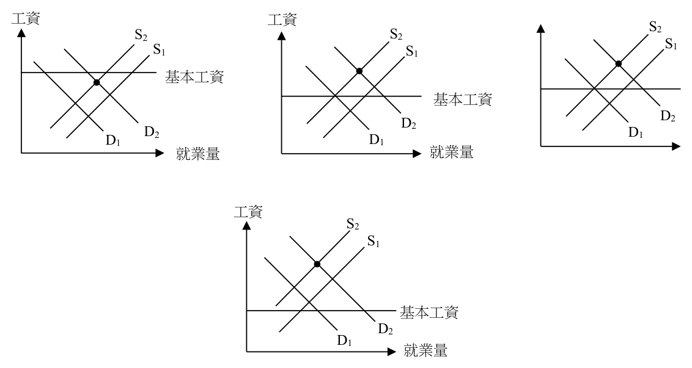
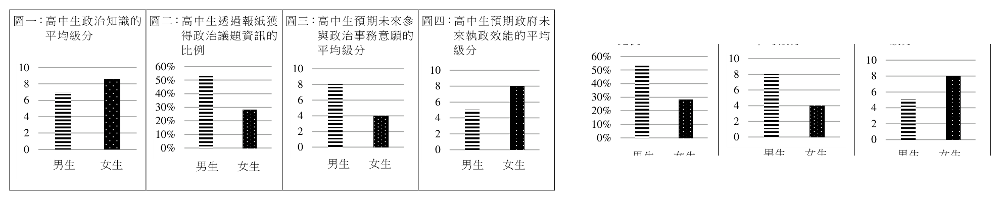

開卷有益 ／
分科測驗 ／ 公民與社會 ／ 111 年111 年分科測驗公民與社會試題與答案
這一頁是民國 111 年分科測驗公民與社會的整份歷屆試題，共 44 題，題目與標準答案出自大考中心 分科測驗歷年試題（依著作權法 §9，考試試題不受著作權保護），其中 44 題附有詳解。以下逐題列出題幹、選項與答案；要計時作答或記錄成績，請用線上練習。
大學入學考試中心原始場次代碼：分科公民與社會
線上作答這一科 →
全部 44 題
第 1 題
某移工權益協會倡議合理工時之立法,但一直未獲輿論支持。學者指出,行動成效
不彰原因,除記者常引述不實資訊且不理會移工團體澄清之要求外,移工製作的議
題短片,也幾乎無媒體頻道可播出。依據前述,倡議行動成效有限的原因最可能為
下列何者?
（A） 媒體近用權保障未能落實而影響公共意見（B） 記者偏頗報導使得移工團體飽受輿論指責（C） 移工缺乏媒體資訊故未能分析政策之影響（D） 移工群體不具公民身分故無從發揮行動力答案：（A）
詳解與考點 正解：題幹同時指出媒體不採納移工團體的澄清，且議題短片幾乎沒有媒體頻道可播放，判準是團體缺乏使用媒體發聲與回應報導的管道。這會使不實資訊主導公共意見，屬於媒體近用權保障未能落實。故選A。
B：題幹指出記者引述不實資訊，卻未具體說明移工團體已遭受何種輿論指責；更核心的限制是團體無法有效澄清與傳播自己的觀點。
C：移工團體已製作議題短片，顯示問題不在缺乏媒體資訊以分析政策，而在缺少播出與近用媒體的機會。
D：是否具有公民身分不是題幹所示的障礙；協會仍可透過倡議參與公共討論，受限的是媒體近用條件。
本題考點：媒體近用權（media access right）——團體無法利用媒體表達、澄清或傳播觀點時，優先從近用權判斷；公共意見（public opinion）——報導與傳播管道會影響哪些資訊進入公共討論；事實與推論（fact and inference）——選項若添加材料未說的後果，不能取代材料已指出的結構性原因。
第 2 題
小嘉讀到教育有助階級流動的理論,之後查閱資料時發現,某個經濟起飛國家晚近
高等教育人口比例明顯增加,於是主張「該國已突破階級複製成為開放社會」;但
小文提出另一份該國資料,質疑小嘉主張難以成立。下列何者最可能是小文的資料?
（A） 家庭處境不利的子女甄選入學比例較低,多由筆試取得入學資格（B） 家庭處境不利的子女就讀大學比例上升,但學費仍多數仰賴補助（C） 公立大學學生多來自中產階級,且畢業生月收入較私校畢業者高（D） 公立大學學生多來自中產階級,且其大學國際排名更勝私立大學答案：（C）
詳解與考點 正解：高等教育人口增加不等於教育機會與教育報酬已脫離家庭階級。公立大學學生多來自中產階級，且公立大學畢業者收入較高，表示優勢階級較容易進入回報較佳的教育位置，教育仍可能再製階級差距，故選 C。
A：甄選與筆試的入學途徑不同，雖可觀察到特定群體的升學管道，卻未直接顯示其是否被排除在較有利的教育位置與後續收入之外。
B：處境不利子女就讀大學比例上升，反而可支持高等教育普及；學費仰賴補助本身不足以證明階級複製仍然存在。
D：公立大學學生多來自中產階級是重要線索，但國際排名高低沒有指出不同學校畢業後的社會經濟回報差異，證據不如 C 完整。
本題考點：階級複製（social reproduction）——判斷時同時看不同階級進入何種教育位置，以及該位置帶來的後續回報；教育機會平等（equality of educational opportunity）——入學人數增加不必然代表所有家庭背景都能平等取得優勢資源；社會流動（social mobility）——要判斷是否流動，須觀察出身與教育、職業或所得結果是否仍高度連結。
第 3 題
我國政府機關曾因新冠肺炎疫情將土地徵收審議小組等實體審查會議改為線上舉
行。有學者批評若無相關配套,恐嚴重侵害民眾權利,尤其偏鄉民眾、長者及經濟
處境不利群體的需求較難被重視。以下哪項情況和該學者的批評最相關?
（A） 從實體轉為線上討論,讓科技業者從中不當獲利（B） 民眾間存在數位落差,易造成參與線上討論門檻（C） 辦理線上審查會議時,容易造成個人資訊的外洩（D） 社會議題有其複雜度,處境不利者缺乏討論動機答案：（B）
詳解與考點 正解：學者特別擔心偏鄉、長者與經濟處境不利群體的需求較難被重視，指向的是不同群體取得設備、網路與數位操作能力不均。實體會議全面改為線上而無配套，會提高部分民眾的參與門檻，故選 B。
A：科技業者是否不當獲利，與處境不利者能否進入線上會議、表達土地徵收意見沒有直接關係。
C：個人資訊外洩是線上會議可能產生的另一種風險，但無法說明為何偏鄉、長者與經濟處境不利者特別受影響。
D：題幹的問題在於參與條件與管道不平等，不是把處境不利者預設為缺乏討論動機。
本題考點：數位落差（digital divide）——判斷時看不同群體是否平等取得設備、網路、技能與數位服務；政治參與（political participation）——程序改採線上時，須檢查是否使特定群體難以表達意見；程序正義（procedural justice）——參與程序的公平不只在規則相同，也在於人們是否實際有能力使用該程序。
第 4 題
某社會運動者回顧近20年該國勞工運動發展時說:「...早年很多公司薪水超低、工
時超長,所以大家當時努力推立法保障基本勞動條件。後來覺得,每個工作環境要
爭取的保障其實不全然一樣,重點應該是讓勞工表達需求,所以我們就推勞工自行
組織、討論,向資方爭取權益」。若僅依據此口述史推論,下列何者最可能是該國
晚近勞運訴求?
（A） 推動勞權教育鼓勵勞工加入工會（B） 透過修法提高勞工基本工資保障（C） 爭取媒體報導支持讓工人文化發聲（D） 倡議立法增加國會的勞工代表比例答案：（A）
詳解與考點 正解：材料把訴求由「立法保障基本條件」轉到「勞工自行組織、討論，向資方爭取權益」。晚近重點因此是形成工會並透過集體協商讓各工作場所表達差異需求；推動勞權教育並鼓勵勞工加入工會，最能支持這種組織化，故選 A。
B：提高基本工資屬於由國家立法設定最低勞動條件，較符合材料所說的早期訴求；它不能直接呈現晚近強調的勞工自主組織。
C：媒體報導與工人文化發聲可以擴大公共能見度，但材料的判準是勞工在工作場所集體討論並向資方協商，兩者焦點不同。
D：增加國會勞工代表比例仍主要透過代議機關處理勞動議題，與勞工自行組織、直接向資方爭取的路徑不同。
本題考點：工會（labor union）——題幹出現勞工自行組織與共同表達需求時，優先判向工會；集體協商（collective bargaining）——由勞方集體與資方協議工作條件，適合處理不同職場的差異需求；勞動立法（labor legislation）——設定最低保障是國家介入的基準，與自主協商可同時存在。
第 5 題
在一場社會不平等的研討會中,某非裔學者指出:為抵抗白人的汙名化,許多非裔
社會運動者喜歡強調非裔與白人一樣強健、具職場生產力,甚至比白人優秀;但這
種強調非裔強健意象的說法,卻讓人們忽略非裔群體中身心障礙者的困境。此學者
對不平等的主張最可能是下列何者?
（A） 非裔群體的身心障礙者因白人我族中心主義遭受汙名化（B） 身心障礙者在職場不被接受會導致任何族群皆受到傷害（C） 媒體常將非裔群體塑造為體育運動細胞發達之刻板印象（D） 即使同屬非裔群體也可能因為處境不同而形成內在壓迫答案：（D）
詳解與考點 正解：材料批評的是反抗外部汙名時，群體內部又以「強健、具生產力」作為理想標準，結果遮蔽了同一族群中身心障礙者的處境。壓迫不是只發生在族群與族群之間；身分、能力與社會位置交織後，群體內也可能形成排除，因此最貼合的是內在壓迫，故選 D。
A：白人我族中心主義可以說明非裔面對的外部汙名，但材料特別指出的是非裔運動論述內部如何忽略身心障礙者，焦點不只在白人對非裔的看法。
B：職場排斥身心障礙者確實是重要問題，但此敘述把差異概括成任何族群都受傷害，沒有指出同一非裔群體內因能力與處境不同而受排除的結構。
C：媒體塑造非裔具運動天賦的刻板印象可能存在，但題幹要分析的是這種強健意象如何在群體內遮蔽身心障礙者，而非單純辨認媒體刻板印象。
本題考點：交織性（intersectionality）——分析不平等時，同時看種族、身心障礙與其他身分如何交互影響處境；內在壓迫（intra-group oppression）——同一群體內也可能因主流理想或資源分配形成排除；刻板印象（stereotype）——即使看似正面的群體形象，也可能遮蔽不符合該形象者的需求。
第 6 題
小華為完成「公民與社會」報告,閱讀美國民權運動和我國太陽花學運等社會運動
事例,以探究公民不服從的正當性。下列何者最適合當作這份報告的立論基礎?
（A） 政府權力來自人民,若政府未保障人民權利與實現公平正義則人民可抵抗政府（B） 侵犯人民權利的惡法是國家暴力,人民以暴制暴對抗政府可彰顯惡法非法精神（C） 為免代議民主失靈,公民不服從與集會遊行都是人民平常維護憲政秩序的手段（D） 為保障政治平等,每個人基於自由意志都可以拒絕服從自己認為不正義的法律答案：（A）
詳解與考點 正解：本題要找的是公民不服從的正當性原理，而非任何形式的反政府行為。人民授權政府是為保障基本權利與公平正義；政府嚴重背離這些目的時，人民得以公共理由抵抗不正義措施，構成公民不服從可被討論的基礎，故選 A。
B：公民不服從通常強調以公開、非暴力且有限的違法行動訴諸正義，不能把遭遇惡法直接推成可以以暴制暴。
C：集會遊行是受保障的合法政治參與方式，公民不服從則包含有意違反特定規範以表達抗議；兩者不宜都視為平常維護憲政秩序的同一手段。
D：個人認為法律不正義，不足以單獨成立公民不服從的正當性。還須以公共理由說明權利侵害與不正義，並受非暴力、比例等限制。
本題考點：公民不服從（civil disobedience）——以公共、非暴力的違法抗議挑戰嚴重不正義，判斷時要區分其目的與手段；人民主權（popular sovereignty）——政府正當性連結人民授權及權利保障，失去此基礎才可能引出抵抗的論證；比例原則（principle of proportionality）——抗議手段與欲矯正的不正義間須維持適當界限。
第 7 題
某民主國家的國會議員選舉,可由各地最高層級的地方政府決定當地國會議員選舉
規則。有的地方政府採取得票最多者當選;有的要求得票數必須過半,若無人過半
就由得票較多的兩人進入第二輪投票對決。依據前述資訊判斷該國的中央與地方政
府權限劃分,下列推論何者最可能?
（A） 地方政府屬性是執行中央政府命令的行政機關（B） 地方有行政和立法自治權但司法權隸屬於中央（C） 憲法授權中央必要時得變更地方行政區域劃分（D） 憲法未明文列舉屬於中央政府的職權則歸地方答案：（D）
詳解與考點 正解：各地最高層級地方政府可自行決定國會議員的選制，表示這不是由中央一致命令的委辦事項，而是地方保有原始的制度形成空間。若中央權限採列舉方式，未明文交給中央的事項就保留給地方；這能解釋各地可採相對多數或兩輪決選等不同規則，故選 D。
A：能自行訂定選舉規則已顯示地方不是單純執行中央命令的行政機關，這與委辦事項的特徵相反。
B：題幹只提供國會議員選舉規則的決定權，不能由此推知地方是否同時擁有立法自治權，或司法權如何劃分。
C：中央在必要時能否變更地方行政區域，涉及領土與地方制度調整權；題幹沒有提供這項權限的資訊，不能作為最可能推論。
本題考點：聯邦制（federalism）——中央與地方各有憲法保障的權限時，先辨認題幹給的是哪一層的原始權限；剩餘權限（reserved powers）——中央採列舉權限時，未列給中央的事項原則上由地方保留；選舉制度（electoral system）——同一國家的不同地方若可採不同選制，通常反映地方制度自主性。
第 8 題
小艾蒐集中國共產黨建黨百年僅有的三份「歷史決議」,並整理出以下摘要表。此
摘要表最能夠佐證中國政治的何種特性?
文件
第一份 第二份 第三份
項目
年代 1945 年 1981 年 2021 年
內容摘述 毛澤東代表中國無產 擁護以鄧小平為代表 全黨全軍全國人民要
階級和中國人民,代表 的黨的正確領導 更緊密團結在以習近
黨的正確路線 平為核心的黨中央周
圍
（A） 長期以黨領政（B） 行政權力獨大（C） 無產階級路線（D） 禁止政黨競爭答案：（A）
詳解與考點 正解：三份歷史決議跨越不同年代，卻都以毛澤東、鄧小平或習近平為核心來表述「黨的正確領導」與全國人民應團結的方向。材料持續把政治正當性置於共產黨領導之下，最能佐證長期以黨領政，故選 A。
B：行政權力獨大必須比較行政、立法與司法等國家機關的權限，摘要沒有這類資訊。
C：無產階級路線只出現在第一份文件的表述，不能概括三份決議共同呈現的政治特性。
D：禁止政黨競爭可能是特定政治體制的制度安排，但材料沒有呈現政黨參選或競爭規則。
本題考點：黨國體制（party-state system）——材料反覆把國家與人民的政治方向繫於單一政黨領導時，可判為以黨領政；材料概括（evidence-based generalization）——找共同特性時，要選所有材料都支持的敘述，不能以單一年代的用語替代整體結論。
第 9 題
甲使用公開的網路論壇發表時事評論,某日乙在甲貼文下留言表達強烈不贊同,甲
憤而將乙留言刪除,乙向甲抗議:「你侵害我的言論自由,我要去法院打官司」。不
過,歷經所有訴訟審級,乙於2022年3月敗訴確定。從言論自由與權利救濟的觀點,
下列敘述何者合乎我國法律規範?
（A） 言論自由是法律賦予的,乙的留言只在法律容許範圍內受保障（B） 乙敗訴是因甲非公權力,不可能侵害乙受憲法保障的言論自由（C） 乙得主張傳播媒體主管機關未能保障其言論自由,提起行政訴訟救濟（D） 乙為維護其言論自由,可在法定期間內向憲法法庭聲請裁判憲法審查答案：（D）
詳解與考點 正解：時間線已指向普通訴訟審級全部完成，且判決於2022年3月確定。在符合聲請要件與法定期間的前提下，當事人可以主張確定終局裁判侵害其憲法保障的權利，向憲法法庭聲請裁判憲法審查；因此 D 符合權利救濟的最後階段，故選 D。
A：言論自由是憲法保障的基本權利，法律可以為正當目的加以限制或具體化，但不是法律任意賦予後才存在的權利。
B：甲是私人並不表示乙的言論自由在私法關係中絕無受侵害的可能。私人間仍可能透過民事規範與基本權利的解釋獲得保障，不能用「不可能」排除。
C：本案爭議是私人管理公開論壇留言，沒有指出傳播媒體主管機關作成可受行政訴訟審查的行政處分或違反特定作為義務，不能直接改以行政訴訟救濟。
本題考點：裁判憲法審查（constitutional review of judgments）——普通救濟用盡後，符合要件者得就確定終局裁判聲請憲法審查；言論自由（freedom of expression）——基本權利受憲法保障，法律的角色是具體化與限制，不是任意創設；私法關係中的基本權保障（horizontal effect of fundamental rights）——相對人為私人不代表基本權利問題必然不存在。
第 10 題
年滿15歲的小安在夜市飲料攤打工,跟老闆約定報酬和工作時間,也得到父母同意,
工作愉快。某晚勞工局執行勞動檢查時,發現小安逾時夜間工作,將老闆移送法辦。
有關此事件涉及的勞動法規,下列敘述何者正確?
（A） 勞基法所訂工資、工時等勞動條件標準,經締約雙方同意得另外約定排除（B） 勞動契約受到私法自治保障,雙方合意簽訂的契約內容不應受到法律限制（C） 勞動契約須受勞動基準法規定限制,小安與老闆不能享有完全的締約自由（D） 小安打工獲父母同意,勞工局依法不得干涉經法定代理人同意之僱用契約答案：（C）
詳解與考點 正解：題幹的15歲與逾時夜間工作，觸發的是未成年勞工保護與勞動基準的強行規定。勞動契約雖以雙方合意為基礎，但工資、工時及未成年勞工保護設有最低界限，雇主與勞工不能藉合意取得完全的締約自由。故選C。
A：勞動條件的法定最低標準具有保護勞工的強制性，雙方即使同意，也不能以約定排除不利於勞工的限制。
B：私法自治不是毫無界限。勞動關係因勞雇地位不對等，法律可用強行規定限制契約內容。
D：父母同意只涉及未成年人的法定代理問題，不能免除雇主遵守工時與夜間工作的勞動法規，也不會排除勞動檢查權限。
本題考點：私法自治（private autonomy）——契約可由當事人合意，但先判斷有無強行規定限制；強行規定（mandatory rule）——法律所訂勞動最低標準不得以契約向下排除；未成年勞工保護（protection of young workers）——看到年齡與夜間工作時，要另外檢視特別保護規範。
第 11 題
甲在網路向乙公司購買衣服,收到後發現顏色與電腦螢幕顯示不同,故聯絡乙欲退
貨退款。乙表示「網站有明顯標示『貨物售出,恕不退貨,僅能依同等價額換貨』」,
但甲堅持退貨退錢。關於甲乙間交易的權利義務,下列敘述何者最適切?
（A） 衣服顏色與螢幕顯示不同屬貨品瑕疵,甲有權主張的是減少價金（B） 乙在網站的標示是網路交易的特別約定,故甲不能主張退錢退貨（C） 甲符合網路交易的退貨規定,可不附理由且無須證明貨品有瑕疵（D） 該標示因設置於網站故定型化契約不成立,因此甲可以主張退貨答案：（C）
詳解與考點 正解：網路購物屬通訊交易時，消費者在法定退貨期間行使解除權，不以商品有瑕疵、賣方違約或提出理由為前提。甲收到衣服後要求退貨退款，重點在這項特別保護，而不是先證明螢幕色差是否構成瑕疵。故選C。
A：螢幕顯示與實物顏色不同是否構成瑕疵仍須個別判斷；即使無法證明瑕疵，甲在通訊交易中仍可能行使不附理由的解除權，這比減少價金更切合題意。
B：網站預先標示不得退貨，不能排除法律給予通訊交易消費者的解除權；這正是它看似屬於特別約定卻不能對抗法定保護之處。
D：網站上的條款可以構成定型化契約，問題不在契約不成立，而在其中排除法定退貨權的內容不能有效限制消費者。
本題考點：通訊交易解除權（right of withdrawal in distance sales）——看到網路購物與收貨後退貨時，先判斷是否可不附理由解除；定型化契約（standard-form contract）——預先擬定的網站條款可以成立，但不得排除消費者的法定保護；瑕疵擔保（warranty against defects）——商品瑕疵的救濟與通訊交易的無理由解除是兩條不同路徑。
第 12 題
某私立高中校規明定:「學生不得在校內舉辦政治活動,違反者記小過;情節重大
者,記大過或予以退學。」該校學生甲與同學深感氣候變化問題影響未來世代生活
甚鉅,某日合作舉辦「抗議全球暖化」快閃活動,由甲演說三分鐘,抗議全球暖化
問題造成之危害。事後,校方認定該活動具政治性,將甲與舉辦活動之其他同學各
記小過乙次。關於甲就此能否提出法律救濟,下列敘述何者最適當?
（A） 遭學校記過並非受國家公權力侵害,故甲僅能在校內進行申訴（B） 甲被私校記過,因權利受到侵害故得依行政爭訟管道提起救濟（C） 記過未使甲喪失學生身分,並非受教權遭侵害故無法行政救濟（D） 甲與私校間的糾紛屬於私權爭議,應向普通法院提起民事訴訟答案：（B）
詳解與考點 正解：私立高中對學生作成記過處分時，仍可能實質影響學生的受教權；不能只因學校是私立，即把校規處分完全當成一般私權糾紛。依題意，甲可循行政爭訟管道主張權利受侵害並請求救濟。故選B。
A：私立學校辦理教育並對學生作成具有懲戒效果的決定，不能一概認定只剩校內申訴；受教權受影響時仍可能進入行政救濟。
C：是否可救濟不以失去學生身分為唯一門檻。記過本身即可對學生受教權與在學權益產生不利影響。
D：本案的核心是學校在教育關係中作成的懲戒決定，並非單純私人間的契約或財產爭執，不能逕以一般民事訴訟作為唯一途徑。
本題考點：學生受教權（right to education）——判斷學校措施能否救濟時，要看是否對學生教育權益造成實質不利；私校教育關係的公法性（public-law nature of private-school education）——私校不當然排除公法救濟，須看其是否行使教育上的懲戒權限；行政救濟（administrative remedy）——遇到具公權力效果的教育處分時，先考慮申訴與行政爭訟的路徑。
第 13 題
甲是13歲國中生,加入幫派後不再去學校。某日因該幫派與其他幫派發生糾紛,甲
毆打其他幫派成員,造成對方受重傷而被警方逮捕。依據我國司法制度,以下關於
本案的評論何者正確?
（A） 警察應將甲交給父母或學校,循教育輔導協助改正,不應進入司法程序（B） 甲雖無刑事責任能力,但仍受少年事件處理法規範,檢察官可將其起訴（C） 甲的犯行是重罪,屬於少年刑事案件,應交由法院依刑事審判程序處罰（D） 甲有觸犯刑法的行為,會由法院決定將其交付輔導,或是給予保護處分答案：（D）
詳解與考點 正解：關鍵是甲13歲，尚未達刑事責任年齡；但他已有觸犯刑罰法令的行為，仍須依少年事件處理制度接受處理。法院會依個案情況決定交付輔導或給予保護處分，而不是直接以一般刑事程序處罰。故選D。
A：甲的年齡使本案不走一般成人刑罰程序，但嚴重傷害行為仍須進入少年司法制度，不是只交由父母或學校教育輔導即可。
B：甲雖受少年事件處理法規範，卻因未達刑事責任年齡而不能由檢察官以刑事被告身分起訴；前半句正確不會使後半句成立。
C：行為可能很嚴重不會改變甲未達刑事責任年齡的事實，故不能直接依一般刑事審判程序判處刑罰。
本題考點：刑事責任年齡（age of criminal responsibility）——先由行為人的年齡判斷能否進入一般刑事處罰程序；觸法少年（juvenile who commits an act violating criminal law）——未負刑責不表示行為完全不處理，仍可能進入少年保護程序；少年保護處分（juvenile protective disposition）——判斷重點是法院依少年最佳利益與個案需要採取適切措施。
第 14 題
甲到乙經營的小吃店用餐,和乙激烈爭吵,甲以手機將吵架過程錄影;之後乙顧及
其他顧客仍在用餐,就不收甲的餐費讓他離開。幾天後,甲未經查證便在網路指控
乙使用過期食材,並將乙照片上傳網路,加以辱罵。甲的行為造成乙小吃店營業損
失慘重,乙氣憤不已,幾天後過世。其配偶丙決定採取法律行動。依據現行法律規
定,以下各項丙可能採取的法律行動何者正確?
（A） 乙雖已過世,丙仍可向甲請求支付當天餐費（B） 乙個人名譽受甲的侵害,丙可向甲請求賠償（C） 因乙已經過世,丙不可請求甲賠償營業損失（D） 丙不可因乙的肖像權受到甲侵害而對甲索賠答案：（D）
詳解與考點 正解：題幹明示乙讓甲離開時「不收餐費」，表示當日餐費債務已被免除；甲上傳的則是乙本人的照片。肖像權屬於特定自然人的人格法益，乙死亡後，丙不能只因配偶身分就以乙的肖像權受侵害為由索賠，故選 D。
A：乙已表明不收甲的餐費，甲對該餐費的給付義務已消滅，丙無從再請求。
B：受侵害的是乙個人的名譽。丙若要主張自己基於配偶關係的身分法益受損，仍須有其自身受重大侵害的要件，不能直接代乙請求個人名譽損害賠償。
C：小吃店營業損失屬財產損害，乙死亡不會使對甲的賠償請求當然消滅；丙得在繼承關係所及範圍內主張。
本題考點：人格權（personality rights）——先辨認受侵害的是誰的名譽、肖像或隱私，再判斷誰能主張救濟；財產損害與非財產損害——被害人死亡後，財產上的賠償請求不會當然消失，個人人格法益則不能由親屬當然代位主張；債務免除（remission of debt）——債權人明確表示不收取給付時，先檢查原債務是否仍存在。
第 15 題
因新冠肺炎疫情影響,各國陸續採取封城措施,但此項措施引發民眾反彈。有人以
堅定口吻說:「政府絕對不能封城,這樣我就會沒工作,很快就沒飯吃,雖然病死
和餓死的結果都一樣,但我寧願是上班染疫病死,也不願沒工作餓死。」若以機會
成本的觀念來評估,下列哪項政策最可能改變這位民眾的選擇?
（A） 調漲基本工資（B） 增加失業給付（C） 提高職業災害補助（D） 擴大醫療保險給付答案：（B）
詳解與考點 正解：關鍵在當事人把封城等同於失去工作收入，因而把不上班的代價看得很高。增加失業給付可補上一部分失業期間的所得，使封城的機會成本下降，最可能改變其寧願冒染疫風險也要上班的選擇，故選 B。
A：調漲基本工資影響仍在職者的最低工資，不能直接填補封城期間失業所失去的收入。
C：職業災害補助處理的是工作造成的職災風險，不是封城後沒有工作與食物來源的損失。它看似與上班風險有關，但沒有降低停工的機會成本。
D：擴大醫療保險給付可減少生病後的醫療負擔，卻未處理題幹所強調的失業與生活費問題。
本題考點：機會成本（opportunity cost）——比較選擇時看放棄另一方案的最大代價，而非只看眼前利益；所得移轉（income transfer）——失業給付在失業時提供所得，可直接改變不工作的代價；政策對誘因的影響——先找出題幹人物真正承受的成本，再判斷何種政策會改變它。
第 16 題
俄烏戰爭發生後,俄羅斯面對西方國家經濟制裁,盧布一度大幅貶值。俄國央行在
今年2月底調升利率,由原本的9.5%一口氣調升至20%。下列何者最能解釋俄國央
行所採取之政策原理及目的?
（A） 實施寬鬆的貨幣政策,以滿足民眾的現金需求（B） 設定利率的價格下限,解決市場現金短缺問題（C） 利率上升增加可貸資金,以刺激廠商投資意願（D） 利率上升減少貨幣供給,以求維持穩定的物價答案：（D）
詳解與考點 正解：盧布大幅貶值後，央行把利率由 9.5% 大幅調高到 20%，是以緊縮貨幣來抑制通膨與匯率不穩。利率上升會提高持有或借用資金的成本，抑制信用擴張與貨幣供給，因而有助維持物價穩定，故選 D。
A：寬鬆貨幣政策通常是降息或增加貨幣供給；題幹所述的是大幅升息，方向相反。
B：央行調升政策利率不是為了解決現金短缺。分辨關鍵在升息的目的，是抑制過度的貨幣與物價壓力，而非增加流通現金。
C：較高利率可能提高儲蓄意願，但會提高借款成本並降低廠商投資意願，不能用刺激投資解釋此政策。
本題考點：緊縮性貨幣政策（contractionary monetary policy）——看到升息時，先連到借貸變貴、信用擴張受抑與貨幣壓力下降；利率與投資——利率上升通常抑制借款投資，利率下降才較能刺激投資；通貨膨脹與匯率穩定——貨幣貶值伴隨通膨壓力時，央行可用升息降低需求面壓力。
第 17 題
閱讀以下四格漫畫:
是叔叔在國外工作 月薪20 萬耶! 收入換成新臺幣
哇! 收入 支出 來看,似乎不錯,
的記帳本耶! 叔叔好厲害喔!
真的! 但在當地生活應
薪資 便當 該還是有些辛苦。
200000 1500
就所得與物價的關聯而言,下列哪項指標衡量的意涵最可用來解釋最右格的論點?
（A） 經濟成長率（B） 通貨膨脹率（C） 購買力平價指數（D） 消費者物價指數答案：（C）
詳解與考點 正解：關鍵在漫畫把海外月薪換算成新臺幣後看似很高，卻又指出當地生活仍可能辛苦；判斷生活水準要同時比較各地物價與貨幣購買能力，而不是只換匯。購買力平價指數正是將不同經濟體的價格水準納入換算的指標，故選 C。
A：經濟成長率衡量一段期間產出增加的幅度，不能比較同一筆薪資在兩地能買到多少商品與服務。
B：通貨膨脹率衡量某地物價隨時間上漲的速度；題幹比較的是跨國生活成本，不是前後期物價變動。
D：消費者物價指數反映單一地區消費籃價格的相對變化；未與另一地價格水準換算時，無法直接說明薪資的實質購買力差異。
本題考點：購買力平價（purchasing power parity，PPP）——比較跨國收入與生活水準時，先把價格水準納入，不能只看匯率換算後的名目金額；名目收入與實質所得（real income）——同額貨幣能購買的商品量不同時，實質生活水準也不同。
第 18 題
某國的香蕉價格一向波動甚大。某年儘管該國農業部前一年已經提出警告:「如果
沒有颱風,價格會很低。」但農民仍然大量搶種,最後香蕉的價格果然崩盤。下列
何者最能夠適當詮釋上述香蕉價格崩盤的結果?
（A） 農民自利選擇導致的市場機能（B） 農民低估香蕉生產的機會成本（C） 因市場失靈進而產生無謂損失（D） 因資源的稀少性導致過度競爭答案：（A）
詳解與考點 正解：農業部已預告無颱風會使香蕉價格低落，農民仍各自依預期收益大量搶種；個別追求自身收益的決策加總後造成供給過多與價格崩盤。這正是在分散決策下，農民自利選擇所呈現的市場機能，故選 A。
B：機會成本是為生產香蕉而放棄的其他用途價值；題幹的直接原因是大家同時擴種造成供給過剩，不能由此判定農民低估機會成本。
C：價格下跌會傳遞供給過多的訊號並促使後續調整，題幹未顯示外部性、公共財等市場失靈，也不能直接推出無謂損失。
D：稀少性表示資源有限，卻無法解釋當年香蕉產量過多與價格崩盤。看似都有競爭，但本題的關鍵是供給集中增加。
本題考點：市場機能（market mechanism）——個別生產者依價格與收益作決策時，總量可能出現供給過多或不足；供給過剩（excess supply）——供給量大於需求量時，價格有下跌壓力；機會成本（opportunity cost）——判斷是否涉及機會成本，須找出被放棄的替代用途，不可只因結果不佳就套用。
◎ 我國的《司法院釋字第七四八號解釋施行法》保障同性婚姻,使同性戀者與異性戀 者皆擁有結婚的權利。該法實施至今,許多民眾透過各種管道發聲表達認同及支持, 但也持續有反對的聲音。另外,在現行制度下,我國國民的同性伴侶若為外國人, 且其所屬國家的法律不承認同性婚姻,則伴侶雙方在我國便無法結婚。因此有公民 團體倡議,應進一步修法保障跨國同性伴侶,但這項倡議,也引發不同立場團體的 質疑。請問:
第 19 題
依據題文,該法最能落實以下哪項與人權有關的理念?
（A） 保障社會處境不利群體的積極平權（B） 凝聚社會處境不利群體的國家認同（C） 肯認社會不同群體的多元身分認同（D） 促進社會不同群體的意見表達自由答案：（C）
詳解與考點 正解：題組指出同性戀者與異性戀者都取得結婚權利，並呈現跨國同性伴侶仍待保障的差異。法律承認不同性傾向群體可依其身分建立婚姻關係，重點是肯認社會多元身分，而非要求所有人採取同一生活方式，故選 C。
A：積極平權通常是為矯正不利處境而給予特別措施；題組所述核心是婚姻制度對不同性傾向身分的承認，不能只以資源補償來概括。
B：國家認同是成員對國家的共同歸屬感，與是否承認同性婚姻的多元身分沒有直接對應。
D：題組確有支持與反對聲音，但該法保障的是結婚身分與制度資格，不是以促進意見表達自由為主要內容。
本題考點：多元身分認同（recognition of diverse identities）——制度保障不同群體依其身分平等參與社會時，優先從承認與尊重的角度判讀；形式平等與實質平等——同樣給予婚姻資格是消除制度排除的一種做法；人權保障——判題時要區分法律直接保障的權利，與討論過程中伴隨出現的表意活動。
第 20 題
未來若要透過修法解決同性伴侶跨國婚姻的爭議,下列哪項作法最符合審議民主的
精神?
（A） 由政府部門邀集學者召開公聽會,彙整學者專業意見與共識作為修法的重要依據（B） 由公民團體發起公投並舉行辯論會,讓正反立場代表辯論且實況轉播後交付公投（C） 由大法官以憲法法庭進行言詞辯論後做出憲法裁判,再由立法院依裁判意見修法（D） 由不同立場的民眾開會並諮詢專家,形成共識結論後交由政府作為修法重要參考答案：（D）
詳解與考點 正解：審議民主重視不同立場的公民在充分資訊與專家協助下相互討論，並形成可被公共理由支持的結論。由不同立場民眾開會、諮詢專家，再把共識提供政府修法參考，正符合這個程序，故選 D。
A：只邀集學者開公聽會，主要蒐集專業意見，缺少不同立場一般民眾共同審議的環節。
B：正反代表辯論與實況轉播有助資訊公開，但最後交由公投以票數聚合偏好，並未呈現民眾彼此討論後形成共識的核心程序。
C：憲法法庭言詞辯論是司法審判程序，重點在憲法爭議的裁判，不是公民共同形成修法意見。
本題考點：審議民主（deliberative democracy）——看到多元民眾、資訊或專家協助、理性討論與共識形成時，可判為審議程序；直接民主（direct democracy）——公投重在以投票作集體決定，不等同於審議；專家諮詢（expert consultation）——專業意見可協助審議，但不能取代公民之間的討論。
◎ 某高中提供公民與社會科線上學習教材,引導學生分組延伸探究。圖1和圖2是某項 主題的學習頁面,請據以回答下列問題:
1970 年聯合國大會通過決議,規範 某中東國家在1980 年代因私自發 有核國家不得轉讓或協助製造核武器, 展核武器,遭到國際實施禁運的經濟制 同時推動核裁軍,但允許美、俄、中、 裁。該國經濟發展因長期遭受國際制裁 英、法五國,保留原有核武。聯合國後 而停滯,國內貧窮問題嚴重惡化,有超 來又推動禁核武條約,將核武器完全非 過20%的學齡兒童,因貧困及缺乏資源 法化,獲多國簽署並於2020 年底生效, 而無法就學。
但前述擁核大國皆未簽署。
【學與思1】聯合國推動禁核,跟臺海 【學與思2】該國遭到禁運制裁後,對 關係有何關連? 其社會結構和階層流動有何影響?
圖1 圖2
第 21 題
某學習小組針對【學與思1】提出臺海關係的推論,依據圖1資料最足以支持哪項推
論?

（A） 禁核武條約的正式生效,有助於提升臺海關係穩定（B） 我國將禁核武條約國內法化,臺海關係即受其約束（C） 為堅持「一個中國」政策,中國擁核武以阻止我國重返聯合國（D） 中國擁核武自重,增添臺海關係發展變數且影響國際對臺政策答案：（D）
詳解與考點 正解：題幹指出既有核武大國得保留核武，後續禁核武條約也未獲這些國家簽署；中國又在其列。這表示核武實力仍是國際權力的重要變數，會牽動各國看待臺海安全與對臺政策的判斷，故選 D。
A：禁核武條約生效只表示締約國受其規範，題幹並未提供條約已使臺海關係更穩定的資料。
B：國內法化不能使未受該條約拘束的國際行為者當然受我國法律約束，這個推論跨越了國內法與國際關係的界線。
C：材料沒有說明中國擁核武的目的在阻止我國重返聯合國；「一個中國」政策與核武部署間的特定因果不能由材料推出。
本題考點：國際規範（international norms）——判斷條約效果時，先看哪些國家簽署或受拘束，不能把條約生效等同所有國家都遵守；國際權力（international power）——軍事能力會影響國際互動，但具體動機仍須有材料支持。
第 22 題
圖2所點出的學齡兒童就學率現象,最能做為下列哪個社會階層化論點的例證?
（A） 學齡兒童的就學率差異,極可能造成貧富階級間的仇視與對立（B） 學齡兒童的就學率下降,說明經濟停滯導致兒童普遍失學問題（C） 學齡兒童的就學率問題,顯示國際衝突加深社會資源分配的結構性不平等（D） 學齡兒童的就學率問題,反映全球體系內大國壓迫小國的國際階層化現象答案：（C）
詳解與考點 正解：圖2的因果鏈是國際制裁造成經濟停滯、貧困惡化，並使缺乏資源的兒童無法就學；教育資源因社會經濟位置不同而受不均分配，正是結構性不平等。國際衝突又加重此分配落差，故選 C。
A：階級間的仇視與對立可能是社會不平等的後果之一，但材料只呈現貧困兒童失學，沒有呈現群體間敵意。
B：材料指出超過 20% 的學齡兒童因貧困與資源不足而無法就學，不能推成兒童普遍失學。
D：國際階層化著重國家在全球體系中的不平等位置；題幹此處要說明的是制裁如何在該國內部造成教育資源的結構性落差。
本題考點：社會階層化（social stratification）——判斷不平等時，追問資源是否因群體位置而被系統性限制；結構性不平等（structural inequality）——制度或外在條件若使貧困者持續較難取得教育等資源，即屬結構性障礙。
第 23 題
依據圖1和圖2資料,下列何者最適合當作該線上學習教材的主題?
（A） 國際去核武進程的經濟制裁實例（B） 國際去核武進程中的權力不對等（C） 核武軍備競賽與區域和平的展望（D） 核武軍備大國的國際角色及責任答案：（B）
詳解與考點 正解：兩張學習頁面並列呈現兩件事：既有核武的五國可保留核武且未簽新約，另有一國發展核武後遭制裁而由其社會承受嚴重代價。這種對照指向去核武進程中的權力不對等，故選 B。
A：經濟制裁案例只涵蓋圖2，無法概括圖1所呈現的既有核武大國例外地位。
C：材料沒有比較各國進行核武軍備競賽，也沒有提出區域和平的未來展望。
D：核武大國的角色及責任只說到圖1的一面，未涵蓋圖2所突顯的制裁成本與國際權力落差。
本題考點：主題統整（thematic synthesis）——題組有多則材料時，找能同時解釋各材料的共同問題，而非只概括其中一則；國際權力不對等（power asymmetry）——比較規範時，要檢視強國是否享有例外地位、弱勢行為者是否承擔較高代價。
◎ 新冠肺炎疫情爆發後,曾有電視節目針對某三代同堂七口之家,做了病毒擴散的模 擬實驗,以特殊螢光劑追蹤全家人互動的觸摸軌跡。結果顯示:有六人在兩小時內 接觸到的模擬病毒量就已達危險等級,唯獨奶奶平安無事,身上幾無螢光反應。事 後分析發現,由於家務主要由奶奶負責,她的雙手一直與水為伍,模擬病毒的螢光 劑就一直被水沖掉。節目最後盛讚奶奶家事做得完美,不僅善盡家庭責任,也是防 疫表率。然而,評論者指出,這種稱讚僅片面選擇、歌頌特定現象,可謂透過媒體 再現強化了性別不平等。
111年分科 第 6 頁
公民與社會 共 11 頁
第 24 題
依據題文,評論者認為節目的稱讚強化性別不平等,最可能基於下列哪項理由?
（A） 將女性作為防疫表率,強化性別差異且忽略男性的防疫責任（B） 將女性承擔家務視為理所當然,忽略討論家庭勞務合理分工（C） 僅稱讚女性為防疫表率,未探討男性在疫情中的付出與貢獻（D） 實驗顯示女性不易被傳染,節目卻未討論所涉及的性別差異答案：（B）
詳解與考點 正解：題組的螢光結果來自奶奶長時間做家務、雙手持續碰水；節目卻把她善盡家庭責任當作值得歌頌的防疫表率。這種再現把女性承擔家務視為自然且理想，遮蔽家務是否應由家庭成員合理分工的問題，故選 B。
A：節目確實稱讚奶奶，但批評的重點不是女性與男性天生有何防疫差異，而是家務分工被自然化。
C：未稱讚男性的付出並非核心問題；關鍵在節目把特定女性持續負擔家務的結果，轉化為應受表揚的角色期待。
D：實驗只顯示螢光劑被水沖掉，沒有證明女性較不易被病毒傳染，這是把模擬條件誤當成性別生理差異。
本題考點：性別角色（gender roles）——當照顧或家務被描述為某一性別理所當然的責任時，要辨識其是否固化角色期待；媒體再現（media representation）——媒體選擇何者值得稱讚，會影響社會如何理解正常與理想；家庭無酬勞動（unpaid household work）——分析不平等時，要追問勞務是否被公平分配，而非只看結果是否便利。
第 25 題
依據上文,下列何者能正確描述奶奶的勞動參與以及對GDP統計的影響?
（A） 雖然屬於非勞動力,但其家務活動價值仍可計入GDP（B） 雖非就業人口,但其活動屬於重要勞務,可計入GDP（C） 因其在統計上為非勞動人口,故其活動並不計入GDP（D） 因其屬於失業人口,故其每日家務生產並不計入GDP答案：（C）
詳解與考點 正解：本題的關鍵是把勞動身分與 GDP 的計算範圍分開。依本題選項與題文把奶奶設定為僅從事家庭內無酬家務的情境，C 同時符合非勞動力與不計入 GDP；無酬家務雖有使用價值，通常不列入以市場交易的最終產出計算的 GDP，故選 C。
A：非勞動力的家務活動不會因為有價值就自動計入 GDP，GDP 的統計重點在市場交易的最終產出。
B：家務確實是重要勞務，但「重要」不等於已被市場計價；此選項把使用價值與 GDP 統計混在一起。
D：失業人口必須有工作能力、願意工作並正在求職。題組只呈現奶奶做家務，不能把她列為失業人口。
本題考點：國內生產毛額（gross domestic product, GDP）——判斷是否計入時，先看是否為市場交易的最終產出；非勞動力（not in the labor force）——未就業且未尋找工作者，不應直接歸為失業者；無酬家務勞動（unpaid household work）——具有社會與使用價值，但通常不進入 GDP 的市場統計。
◎ 據媒體報導,因飼料價格上漲,加上禽流感肆虐、蛋商囤貨等因素,即便今年年初 蛋價已上漲三成,市場依然一蛋難求,民眾苦不堪言。為了因應市場缺蛋現象,各 方採取多項措施,例如:(甲)店家限制顧客每次只能購買2盒雞蛋,政府(乙)亦 公告補貼蛋農生產的獎勵措施,(丙)宣布蛋價凍漲,要求售價不得超過每台斤35 元,並(丁)進行現場稽查,嚇阻蛋商囤積行為。不過蛋商普遍反映收購價格及運 輸成本均不斷提高,漲價為不得已,除非政府提高補貼才可能「凍漲」。另外運輸 業不滿政府只補貼蛋農,因為他們也面臨油價大漲的壓力。請問:
第 26 題
以下何種情形可能構成公平交易法上的聯合行為?
（A） 蛋商如願獲得補貼後卻違背對政府的承諾,仍持續漲價（B） 運輸業者與蛋商共同發表聲明,要求政府適度補貼油價（C） 蛋商公會會員大會決議反對全面漲價,並要求其會員按地區採不同售價（D） 消保團體發起「一星期不吃蛋」運動,民眾串聯響應迫使雞蛋價格下跌答案：（C）
詳解與考點 正解：公平交易法上的聯合行為著眼於同一市場競爭者以合意共同限制競爭。蛋商公會以決議要求會員依地區採取共同的售價規則，已涉及同業間協調價格決策；即使表面上反對全面漲價，只要具有限制競爭效果，仍可能構成聯合行為，故選 C。
A：蛋商獲補貼後是否遵守對政府的承諾，是個別業者與政府之間的問題，沒有顯示同業共同協調競爭行為。
B：運輸業者與蛋商共同要求補貼，是向政府表達政策訴求；兩者也不是同一市場的競爭者，未呈現價格或交易條件的聯合限制。
D：消費者串聯拒買是消費者行動，不是事業間共同限制競爭的協議。
本題考點：聯合行為（concerted action）——先確認是否為競爭事業間的合意，再看是否共同限制價格、數量、交易區域或其他競爭條件；同業公會（trade association）——公會決議若指示會員共同處理競爭條件，可能成為聯合行為的載體；政策倡議與限制競爭——共同請求補貼不等於聯合行為，判準在是否直接協調市場競爭。
第 27 題
題文哪項措施最無助於解決市場雞蛋供不應求的現象?
（A） 甲（B） 乙（C） 丙（D） 丁答案：（C）
詳解與考點 正解：題組已說明雞蛋供不應求，丙把售價凍漲在每台斤 35 元，若價格低於市場調整所需水準，會讓需求持續偏高、供給缺乏增加誘因，反而擴大短缺。因此丙最無助於改善供不應求，故選 C。
A：甲不會增加總供給，也未必降低需求，但可抑制單一買方大量購買並讓有限存量分配給更多人；相較之下，丙若形成低於均衡價格的有效價格上限，還會壓低供給誘因並維持較高需求量，因此甲至少有助於緩解短期分配問題。
B：乙補貼蛋農可降低生產成本或提高生產誘因，方向上有助增加供給。
D：丁稽查並嚇阻囤積，可使被囤住的雞蛋回到市場流通，對緩解短缺較有幫助。
本題考點：價格上限（price ceiling）——在均衡價格以下凍漲時，要判斷是否造成需求量大於供給量的短缺；供給誘因（supply incentive）——補貼生產者通常可降低成本或提高供給意願；囤積（hoarding）——稽查囤積主要影響可流通存量，與直接增加產量的措施不同。
第 28 題
其他條件不變下,今年年初的雞蛋價格變動,最可能導致下列何種市場效果?
（A） 雞蛋的需求減少（B） 鴨蛋的需求增加（C） 飼料的供給減少（D） 雞肉的供給增加
二、多選題(占8分)答案：（B）
詳解與考點 正解：題幹的「蛋價已上漲三成」是在問雞蛋價格上升的交叉效果，而不是雞蛋需求曲線是否移動。雞蛋與鴨蛋都是蛋類消費的替代選擇；雞蛋相對變貴時，部分需求會轉向鴨蛋，使鴨蛋的需求增加，故選 B。
A：雞蛋價格上升造成的是同一條需求曲線上的需求量減少，不是需求曲線左移。需求減少須由所得、偏好或替代品價格等外在因素改變引起。
C：雞蛋價格上漲本身不會使飼料供給曲線左移。題幹中的飼料價格是蛋價上漲的成本因素，不能反過來把蛋價變動視為飼料供給減少的原因。
D：雞肉供給取決於養殖規模、生產成本與生產者預期等條件；單由雞蛋價格上升，不能推出雞肉供給增加。
本題考點：替代品（substitute goods）——一種商品相對變貴而另一種商品需求增加時，判為替代關係；需求量與需求（quantity demanded vs demand）——商品本身價格變動只沿需求曲線移動，非價格因素才使需求曲線位移；交叉價格效果（cross-price effect）——判斷另一商品的需求時，要看兩商品是替代還是互補。
第 29 題（多選）
某高中老師安排全班同學到音樂廳聆聽交響樂演出。從未去過音樂廳的甲生很緊
張,除事前煩惱當天應如何穿著才「得體」外,欣賞過程中也擔心自己表現不適
當,連何時該拍手都怕抓錯時機。相對地,乙生因常跟家人購票去音樂廳觀賞演
出,故活動過程中從容不迫,事後老師也讚揚乙生舉止優雅、具備良好音樂欣賞
素養。若從社會階層化角度分析上述事件中「資本與社會平等」的關係,下列哪
些為適當之論點?
（A） 即使老師事前提供解說,也難以完全消除同學文化資本的落差（B） 學生們具備的文化資本高低,決定於教育機構的資源分配多寡（C） 文化資本的獲取如同習慣養成,會讓學生內化特定的生活風格（D） 具備豐富文化資本有助於突破階層化現象,進而實現社會平等（E） 經濟資本有時可轉換為主流認可的文化資本,因而再製不平等答案：（A）（C）（E）
詳解與考點 正解：社會階層化下的文化資本，不只是一時學到的知識，也包含家庭長期培養的品味、互動方式與對制度規則的熟悉度。它能透過經濟資源轉換並被教育制度肯認，從而再製差異，故選 ACE。
A：老師事前解說可以降低陌生感，但甲、乙在長期家庭經驗、穿著判斷與表演禮儀上的累積不同，單次說明難以完全消除文化資本落差。
C：乙從小隨家人進入音樂廳而從容應對，顯示文化資本會在反覆實作中內化為習慣、品味與生活風格。
E：家庭能購票並經常參與音樂活動，是以經濟資源取得主流文化經驗；這些經驗再被讚為有素養，因而可能延續階層優勢。
B：文化資本不只由教育機構的資源分配決定，家庭社會化與日常生活經驗也是題組直接呈現的來源。
D：豐富文化資本可讓個人在既有制度中較占優勢，但資本分配不均本身往往再製階層差距，不能據此推出已實現社會平等。
本題考點：文化資本（cultural capital）——看到熟悉主流品味、語言與場合規則的優勢時，可用文化資本分析其來源；習性（habitus）——長期社會化形成的自然舉止與判斷，常使階層差異看似個人天分；資本轉換（capital conversion）——經濟資本可換取受認可的文化經驗，判斷其是否進一步再製不平等。
第 30 題（多選）
某憲法學者分析我國目前憲政運作的缺失後,主張透過修憲,使中央政府體制更具
有內閣制精神。下列哪些是該學者可能會提出的改革方案?
（A） 總統發布所有命令皆須經行政院院長之副署（B） 行政院院長必須由立法院多數陣營領袖擔任（C） 行政院移請立法院覆議的議決通過門檻提高（D） 立法院可對總統提出不信任投票以促其下台（E） 立法委員可以同時兼任行政院各部會的首長答案：（A）（B）（E）
詳解與考點 正解：內閣制的核心是行政內閣取得國會多數支持、對國會負責，並使行政與立法的人事關係更緊密；總統的行政命令也應受內閣首長負責體制的牽制。因此能強化這些特徵的方案為 A、B、E，故選 ABE。
A：總統所有命令都經行政院院長副署，可使總統行使行政權時由內閣首長承擔政治責任，較具內閣制精神。
B：行政院院長由立法院多數陣營領袖擔任，能讓內閣建立在國會多數支持上，符合議會信任關係。
E：立法委員可兼任行政部會首長，表示內閣成員可直接來自國會，呈現行政與立法較緊密的融合。
C：提高立法院在覆議後維持原議決的門檻，會削弱國會對行政的制衡，並未建立內閣對國會負責的關係。
D：內閣制的不信任投票對象是內閣或首相，而非由立法院直接對總統提出不信任投票。
本題考點：內閣制（parliamentary system）——判斷改革是否具內閣制精神，先看行政首長是否依賴國會多數支持並對其負責；副署（countersignature）——行政命令經內閣首長副署時，可連結權力行使與政治責任；不信任投票（vote of no confidence）——辨認其對象應是內閣，而不是抽象地把所有行政首長都當成對象。
第 31 題（多選）
《原住民身分法》要求原住民與非原住民結婚所生之子女,須跟著具有原住民身分
的父親或母親的姓氏,或取原住民傳統名字,才能取得原住民身分。這導致部分有
原住民血統的民眾,因為隨著非原住民的漢人父親取了漢姓,而無法取得原住民身
分。憲法法庭認定,此種情形違反憲法所保障有關原住民身分認同之人格權,亦牴
觸種族平等及性別平等。下列有關性別平等原則的判斷,哪些符合本件憲法判決的
精神?
（A） 原母漢父的子女登記為原住民的比例遠低於原父漢母,呈現性別實質不平等（B） 該法規定原住民之身分須經國家認定登記才能取得,故造成性別實質不平等（C） 原住民子女不選擇從原母姓氏而選擇從漢父姓氏之行為,牴觸憲法性別平等（D） 唯有登記原住民傳統名字,才得以超越性別且有效保障原住民種族平等與身分
認同（E） 取得原住民身分須跟從具原住民身分父母的姓氏,使身分認定受主流性別文化
影響答案：（A）（E）
詳解與考點 正解：本件爭點不是血統有無，而是以原住民父或母的姓氏、或傳統名字作為身分取得條件時，會和父姓等主流性別文化交互作用，讓原母漢父子女更容易失去身分資格。能指出這種差別影響與其社會根源的 A、E，符合實質性別平等的判斷，故選 AE。
A：若原母漢父子女登記為原住民的比例明顯較低，正說明表面相同的命名條件對不同性別組合造成不成比例的不利結果。
E：身分須跟隨具原住民身分父母的姓氏時，會受父姓等主流性別文化影響，因而把文化慣例轉化為身分取得障礙。
B：國家登記本身是身分行政確認方式，沒有說明為何它會對原父漢母與原母漢父子女造成不同的性別效果。
C：子女選擇從漢父姓氏不是牴觸性別平等；應檢視的是法律把該選擇連結到身分喪失後，是否造成結構性不利。
D：法律原本容許從原住民父母姓氏或取傳統名字，不是只有登記傳統名字一條途徑；把唯一做法說成可有效消除不平等，反而忽略命名條件本身的問題。
本題考點：實質平等（substantive equality）——形式上相同的規則若對特定群體造成不成比例的不利結果，須進一步檢視；間接歧視（indirect discrimination）——規則未明說差別待遇，仍可能因既有社會文化而產生差別效果；原住民族身分認同（Indigenous identity）——判斷身分制度時，要同時觀察個人認同、族群文化與國家制度條件。
第 32 題（多選）
前陣子加拿大極端大雨以致馬鈴薯供給大減。由於馬鈴薯在北美是主食,在亞洲不
過是點心,故出口商暫緩供應冷凍薯條到亞洲市場。日本國內也生產馬鈴薯,但成
本太高,速食店因此祭出薯條限購。臺灣也出現薯條缺貨,店家則推出地瓜薯條因
應。前述薯條缺貨的現象可作為以下哪些推論的佐證?
（A） 在地農產品一旦成為全球化商品,就很難找到類似的替代品（B） 愈是全球化的商品,愈有可能透過專業分工來進行產品創新（C） 全球供應鏈因故而不穩定,會使在地農產品更具有比較利益（D） 極端氣候頻頻出現,可能會凸顯出全球化生產體系的脆弱性（E） 因薯條在亞洲非主食,故價格機制無法緩解市場短缺的問題答案：（C）（D）
詳解與考點 正解：加拿大極端大雨使馬鈴薯減產，供應中斷一路影響日本與臺灣；臺灣店家再以地瓜薯條替代。這既顯示跨國供應鏈受氣候衝擊時的脆弱性，也顯示全球供應鏈中斷、進口薯條取得受限時，在地替代品的相對機會成本可能下降；在題目語境下，這呈現 C 所說的比較利益，故選 CD。
C：全球供應鏈受阻後，依賴進口薯條的機會成本提高；本地可供應的替代農產品相較之下，其相對機會成本可能下降，因而呈現相對優勢。
D：一地的極端氣候導致多國市場缺貨，正可看出全球化生產與供應網絡對單一產地衝擊的脆弱性。
A：臺灣店家以地瓜薯條因應，正表示全球化商品受限時仍可能找到在地替代品，與「很難找到」相反。
B：題組呈現的是缺貨、限購與替代，不足以佐證全球化商品必然透過專業分工進行產品創新。
E：薯條在亞洲不是主食會影響出口商的供應優先順序，但價格仍會影響需求量與供給誘因，不能說價格機制無法緩解短缺。
本題考點：全球供應鏈（global supply chain）——分析一地減產時，追蹤其是否透過跨境分工傳遞到其他市場；比較利益（comparative advantage）——相對優勢要比較替代方案的機會成本與取得條件，不等同於絕對便宜；極端氣候風險（extreme weather risk）——生產集中於特定地區時，氣候衝擊容易外溢為跨國供給不穩。
◎ 某立委針對檢察官偵查中的公務員貪瀆案件,質詢檢察機關最高首長,要求檢察機 關在一個月內起訴,否則首長應下台,並要求檢察機關配合立法院調查,提供該案 件相關證據。某學者得知此事後投書報紙,文章標題:「立委揭弊仍應注意刑事訴 訟基本原則」。內文指出:「檢察官若於起訴前提供相關證據給立委,可能讓案情洩 漏,再加上媒體推波助瀾,恐怕法院未審結,輿論便已認定嫌疑人有罪,因而影響 其受公平審判的權利,若最後發現不構成犯罪,當事人的隱私、名譽也已遭受無法 回復的損害。」請問:
第 33 題
從憲法基本原則來看,關於立委要求限期起訴,下列敘述何者正確?
（A） 揭弊屬立委職權,檢察機關應配合立院調查程序,但得自訂偵查期限（B） 立委有權監督行政機關,但基於權力分立不應要求檢察機關限期起訴（C） 基於民意政治原則,檢察機關首長如未配合立院調查程序應下台負責（D） 立法院為保障人權監督公權力,得經院會決議要求檢察機關限期起訴答案：（B）
詳解與考點 正解：題組同時提到偵查中案件、未審先判的風險與公平審判權。立法委員可以監督行政機關，但檢察官是否、何時起訴須依個案證據與偵查程序判斷；立法權不應以限期起訴介入個案，故選 B。
A：立法院監督不表示檢察機關必須交出偵查中證據。過早提供資料可能洩漏案情並影響偵查與被告的公平審判。
C：民意政治不授權立法機關以個案起訴期限要求檢察機關首長下台，這會把個案偵查轉為政治壓力。
D：院會決議仍不能取代檢察官依證據與法律作成的起訴判斷；保障人權也不構成限期起訴的依據。
本題考點：權力分立（separation of powers）——監督行政不等於可指揮個別司法偵查與起訴判斷；無罪推定（presumption of innocence）——案件未經法院審判確定前，不應由輿論或政治壓力先認定有罪；公平審判（fair trial）——判斷資訊公開與監督時，要兼顧偵查程序及當事人的防禦權。
第 34 題
依據題文,學者文章標題所指原則最可能為何?此原則對保障犯罪嫌疑人權利為何
重要?請在答題卷表格左欄勾選原則,並於右欄摘述題文說明此原則為何重要的一
項理由。(5分)
勾選原則 此原則為何重要的一項理由(30 字內)
□刑法謙抑原則
□自由心證原則
□偵查不公開原則
□不自證己罪原則
標準答案未收錄
詳解與考點 正解：關鍵線索是要求檢察官在起訴前提供證據，可能讓案情外流並在法院審結前形成有罪輿論。答題時應勾選「偵查不公開原則」；理由可摘述為「避免偵查資料外流造成輿論預斷，損及公平審判與名譽隱私。」
本題考點：偵查不公開（confidentiality of investigation）——起訴前的偵查資訊不應任意外洩，以防妨害偵查與未審先判；公平審判（fair trial）——判斷程序保障時，先看資訊曝光是否可能在法院判決前預設有罪。
◎ 今年初基本工資上調到25,250元,原本理論預測調高基本工資會引發失業,但臺灣 今年面對的卻是缺工潮來襲。論者認為這是因為全球半導體短缺,臺灣相關產業的 人才需求旺盛,間接吸走了其他產業的人力,加上疫情後有些人選擇離開職場,各 行各業突然都缺人。請問:
第 35 題
下列何者最能正確描繪題文所述近來臺灣勞動市場狀況?

（A） 臺灣受惠於全球半導體短缺,因而使結構性失業人口大幅減少（B） 缺工引發換工潮,會出現一些摩擦性失業,但循環性失業減少（C） 受疫情影響,臺灣的勞動參與率逐漸增加,因而帶動薪資上漲（D） 提高基本工資有助於生產設備自動化,進而提高整體平均薪資答案：（B）
詳解與考點 正解：題組描述半導體需求旺盛吸走其他產業人力，且疫情後有人退出職場，整體呈現缺工與勞動需求強勁。缺工時勞工轉職會在工作銜接間出現摩擦性失業，而景氣與人力需求較強則會減少循環性失業，故選 B。
A：半導體需求增加與其他產業缺工，不能直接證明技能、職缺與地點失配造成的結構性失業已大幅減少。
C：題組說有些人因疫情後離開職場，指向勞動參與率下降而非增加。
D：提高基本工資可能影響企業自動化決策，但題組沒有提供設備投資或整體平均薪資因自動化提高的事實，不能用來描繪所述現況。
本題考點：摩擦性失業（frictional unemployment）——勞工轉換工作、搜尋職缺的短暫空檔可形成摩擦性失業；循環性失業（cyclical unemployment）——景氣低迷與總需求不足時較常增加，勞動需求旺盛時通常下降；勞動參與率（labor force participation rate）——有人退出職場時，先判斷其是否使勞動力人口減少。
第 36 題
根據題文所述,臺灣今年勞動市場並未因調升基本工資而產生理論預測的結果,最
可用下列哪一圖形解釋?請在答題卷先勾選正確的圖形,再依據圖形解釋,該基本
工資之調整未符理論預期的原因。(5分)
□ A 圖 □ B 圖
工資 工資
S2 S2
S1 S1
基本工資
基本工資
D2
D2 D1 D1
就業量 就業量
□ C 圖
圖例說明:
工資
S2 勞動供給左移(S 1→S 2)
S1
勞動需求右移(D1→D2)
基本工資
D2
D1
就業量
根據所選圖形,說明該基本工資之調整未符理論預期的原因(30 字內)
本題選項為上圖中的 A／B／C／D，請對照圖片作答。
標準答案未收錄
詳解與考點 正解：題幹同時給出「人才需求旺盛」與「有人離開職場」兩個線索，分別是勞動需求右移與勞動供給左移；應勾選 C 圖。需求增加與供給減少都會形成缺工壓力，因此基本工資調高後，不呈現課本中只考慮最低工資時的失業結果。可寫：「勞動需求右移且供給左移，缺工抵銷最低工資的失業壓力。」
本題考點：勞動需求與供給（labor demand and supply）——先把產業擴張判為需求移動、勞工退出判為供給移動，再看兩者對就業與工資的合併效果；最低工資（minimum wage）——最低工資的效果須連同市場需求與供給變動判讀，不能只套用其他條件不變的結論。
◎ 某建商看中某原住民族傳統領域土地開發成本較低,決定興建渡假村。當地縣政府 認為渡假村有助經濟發展與促進原住民就業,故積極提供行政協助,快速核發開發 許可,而承辦開發許可的縣府科員恰巧是建商大學同學。此案引發當地原住民強烈 抗議。數個公民團體也指控,該案的環境影響評估程序不完備,且一再忽視公民團 體訴求,更批評承辦公務員未事先自行迴避。另有學者指出,此開發案爭議根源, 在於原住民族傳統領域及其文化未受主流社會肯認,這也是原住民族曾在總統府前 長期抗議的原因;此種抗議強調為自身文化與認同發聲,與著眼於爭取權益的抗爭 有所不同。因爭議擴大,縣議會做成決議,要求縣政府提出專案報告。此案經媒體 披露,也引發民眾不同意見。請問:
第 37 題
依據題文,原住民族在總統府前進行長期抗爭所欲爭取的目標,和以下哪項社會運
動最接近?
（A） 學生運動發起靜坐,提出解散國民大會、廢除臨時條款等訴求（B） 居住正義社運發起露宿重要幹道抗爭,主張房屋資源重新分配（C） 環保團體持續發起大型社會運動,以向外界宣揚理念與永續價值（D） 廠房員工發起運動,要求資方停止排放廢料以降低工作環境風險答案：（C）
詳解與考點 正解：題組明確區分原住民族長期抗爭是為自身文化與認同發聲，且不同於著眼爭取權益的抗爭。環保團體藉持續社會運動向外界宣揚理念與永續價值，同樣以價值與身分認同的表達為核心，故選 C。
A：要求解散國民大會、廢除臨時條款，主要是針對政治制度與憲政改革，並非以文化認同的承認為主要訴求。
B：居住正義強調房屋資源重新分配，核心是社會資源與權益分配，正是題組所區分的另一類運動。
D：員工要求降低工作環境風險，是勞動權益與職業安全的訴求，並非文化與認同的表達。
本題考點：認同政治（identity politics）——訴求若重在文化、身分與被社會承認，可從認同政治理解；社會運動（social movements）——比較運動時先辨認其主要訴求是價值表達、制度改革、資源重分配或權益保障；價值倡議（value advocacy）——以理念與生活價值說服社會的行動，和直接爭取物質利益的行動要分開判讀。
第 38 題
依照行政程序法與其他相關法規,下列何種情況會造成開發案的許可違法?
（A） 在渡假村開發案的核准文件中,未明訂須聘用當地原住民為員工（B） 縣府並未事先取得各個公民團體之同意,就核准該渡假村開發案（C） 承辦開發案的公務員與建商有同學關係,卻未依法主動自行迴避（D） 開發案未經部落會議取得當地部落的同意,政府即核准該開發案答案：（D）
詳解與考點 正解：關鍵在開發地是原住民族傳統領域，而政府在未經部落會議取得當地部落同意前即核發許可。涉及原住民族土地及自然資源的開發利用，法律要求先進行部落諮商並取得同意或參與；這是許可作成前應滿足的程序保障。欠缺該程序會使核准的合法性受影響，故選 D。
A：核准文件未明訂優先聘用當地原住民，未必違反開發許可所必須遵守的法定要件。促進就業可以是政策目標，不能直接推成每一許可都必須附加此項條件。
B：公民團體的意見應有適當表達與參與機會，但行政程序並不以取得每一公民團體的同意為許可要件；「參與」與「一致同意」是不同層次。
C：承辦人與建商是同學，未當然構成法定迴避事由。迴避義務須有法律所定的利害關係或特定身分關係，不能只由一般社會關係推定。
本題考點：原住民族知情同意（free, prior and informed consent）——開發利用傳統領域時，先判斷是否依法須取得部落同意或參與；行政程序迴避（recusal）——只有具法定利害或特定關係時，才產生迴避義務；公民參與（public participation）——保障意見表達不等於要求每一團體同意。
第 39 題
下列關於本開發案外部成本的說明,何者最為正確?
（A） 由於本案開發成本較低,故外部成本也較低（B） 本開發案的外部成本是建商開發的重要誘因（C） 由於政府的積極開發,使得本案的外部成本降低（D） 原住民族傳統消失與環境破壞都是本案外部成本答案：（D）
詳解與考點 正解：本案成本較低是建商內部成本降低的訊息，不能排除未由建商或消費者承擔的損害。題幹指出傳統領域與文化未受肯認，並提及環境影響評估程序不完備；若開發造成文化傳承受損或環境破壞，損失由部落、周遭居民或社會承擔，沒有完整反映在渡假村的市場價格中，故選 D。
A：開發成本低只表示建商付出的私人投入較少，不能據此判定外部成本也低。外部成本恰可能因損害未被計入私人成本而被忽略。
B：外部成本是未由交易雙方負擔的損失，不是建商開發的正面誘因。建商可能因私人成本未涵蓋這些損失而仍有誘因，但誘因本身不是外部成本。
C：政府提供行政協助或快速核發許可，不等於已採取防治或補償環境、文化損害的措施，不能直接推論外部成本降低。
本題考點：外部性（externality）——判斷成本是否落在交易雙方以外的人身上，若是即屬外部成本；私人成本與社會成本（private cost and social cost）——市場價格未納入的環境與文化損失，會使社會成本高於私人成本；市場失靈（market failure）——有外部成本時，個別決策不必然反映全體社會的代價。
第 40 題
以下民眾對本開發案的意見,哪項最切合民主治理對行政過程的課責要求?請在答
題卷表格先勾選一項意見,再說明該意見符合民主治理對行政過程課責的理由(5
分;左欄未勾選或勾錯,則本題不計分;右欄抄錄題文或左欄文字,視同作答錯誤)。
勾選一項意見 符合民主治理對行政過程課責的理由(40 字內)
□地方政府依法有協助民間開
發案的行政責任
□政府行政職責包括促進就業
以保障縣民福祉
□政府應舉辦該案環評公聽會
以避免黑箱作業
□議會應事先審查該案預算以
避免程序不正當
標準答案未收錄
詳解與考點 正解：本案的明確程序問題是環評程序不完備、公民團體訴求遭忽視，且承辦人與建商有私人關係；應勾選「政府應舉辦該案環評公聽會以避免黑箱作業」。公聽會讓資訊、理由與民眾意見能公開記錄，使行政許可決定可受檢視與追究，正符合行政過程的課責要求。可寫：「公開程序與民眾參與使許可決定可受檢視與追究。」
本題考點：行政課責（administrative accountability）——判斷行政過程是否可課責時，看理由、資訊與參與是否能被公開檢驗；程序正當性（procedural legitimacy）——有利害衝突或重大環境影響時，透明程序與利害關係人參與是核心保障。
◎ 19世紀婦女運動興起時,便訴求女性參政與就業之平等。200年後的今天,這兩項 平等實現了嗎?學者仍有不同意見。
在政治參與方面,人們常主張各國女性元首持續增加,女性的政治參與已趨於 平等。但甲學者提醒,各國重要政治職務(如國會議員等)的性別比率仍是男高於 女,因為傳統認為女性較不懂政治、欠缺參與技能,這不僅使人們較不支持女性從 政,甚至導致女性即便具備能力,仍自我限縮、對政治事務卻步。
為改善此問題,許多國家在各種公職選舉訂定女性保障名額。但乙學者批評保 障名額雖增加女性出任公職的機會,卻對未受保障者形成另一種歧視;另外,丙學 者提醒,基於選舉制度差異,有些公職選舉適合規劃保障名額,有些並不適合。 至於就業平等,許多人認為統計顯示女性失業率低於男性,故現今女性就業並 無不利,無須保障。但丁學者持反對意見,他主張應重視女性勞動參與率較男性低, 僅看失業率無法完整掌握女性參與勞動市場的不利之處。請問:
第 41 題
有人認為乙的批評是對法律上平等原則的誤解,下列何項論述最能反駁乙學者?

（A） 立法機關依民主程序議決法律適用於所有人民,即已落實法律上平等原則（B） 在婦女擁有包括出任公職等選擇職業的自由時,即已落實法律上平等原則（C） 保障名額制度未直接造成其他性別參選者的不利,不違反法律上平等原則（D） 制度設計按照性別社會處境的不同給予差別待遇,可實現法律上平等原則答案：（D）
詳解與考點 正解：判準不是對所有人採取字面完全相同的待遇，而是制度能否回應女性受刻板印象與自我限縮所造成的實際參政障礙。保障名額針對已存在的結構性不利作必要且適當的差別安排，目的是讓競爭機會更趨平等；所以依不同社會處境設計差別待遇，正能實現實質平等，故選 D。
A：法律形式上適用所有人民，只能說明規則表面一致；若既有社會條件使不同群體實際上難以取得同等機會，仍不足以落實平等。
B：婦女形式上享有參政與選擇職業的自由，不代表刻板印象、支持網絡與進入門檻已消除。自由的存在與實質機會平等不能混為一談。
C：保障名額確實會影響未受保障者的競爭機會；分辨關鍵不在否認差別效果，而在差別待遇是否為改善結構性不利所必要且適當。
本題考點：形式平等與實質平等（formal equality and substantive equality）——規則相同不足以判定平等，還要看群體實際取得機會的條件；積極平權措施（affirmative action）——為矯正長期結構性不利而設的差別待遇，須有正當目的與適當關聯；性別刻板印象（gender stereotype）——判題時要看它是否造成參與前的自我限縮或外在排除。
第 42 題
考量丙學者的提醒,下列我國公職選舉中,哪項適合採取女性保障名額且論據最為
合理?
（A） 縣市議員:地方自治最基層民意代表,可落實性別平等並深化基層民主（B） 區域立委:歷年大多由男性候選人當選,可矯正制度所構成的性別歧視（C） 直轄市長:最高層級地方政府首長,可彰顯女性參政意義及其政治地位（D） 不分區立委:應選出的總席次為複數,可以兼顧反映民意以及性別平等答案：（D）
詳解與考點 正解：關鍵在保障名額必須能嵌入選舉制度，並且不以犧牲選民代表性為代價。不分區立委一次分配複數席次，政黨名單可在排序或提名上安排性別比例，同時按政黨得票反映民意；這正回應丙所說「有些選制適合、有些不適合」的制度差異，故選 D。
A：縣市議員可能有複數席次的選區，但選項的理由只訴諸基層民主與性別平等的價值，沒有說明名額如何與具體選區、席次配置相容，不能成為最合理的制度論據。
B：區域立委多為一選區一席，歷來較多男性當選並不能單獨證明選舉制度本身構成性別歧視；單一席次也較難在同一選區內安排保障名額。
C：直轄市長是一個單一首長職位，無法在一次只選出一人的競爭中配置名額。彰顯女性參政意義屬價值主張，沒有解決選制上的限制。
本題考點：比例代表制（proportional representation）——一次選出複數席次並以政黨名單分配時，較能同時安排性別比例與民意代表性；保障名額（gender quota）——先看選區席次數與名單設計是否容納名額，而非只看職位層級；選舉制度（electoral system）——同一平等目標在單一選區與複數席次選制的可行性不同。
第 43 題
下列導致失業率變動的原因,何者最符合丁學者分析就業問題時所使用到的概念?
（A） 大學入學機會增加,許多人選擇升學,24歲以下年輕人失業率下降（B） 因薪資上漲,廠商引進更多機器設備取代勞動力,引發失業率上升（C） 產業轉型使生產力提升,高科技業勞動需求因而上升,失業率下降（D） 移工引進人數上升,本地部分勞工的就業機會受排擠,失業率上升答案：（A）
詳解與考點 正解：丁提醒「失業率低」不足以反映女性的處境，因為失業率的分母只含正在工作或正在找工作的勞動力，沒有把退出勞動市場的人算進去。大學入學機會增加使部分24歲以下者由求職轉為升學，勞動力人口會減少，失業率即使下降也未必表示更多人就業；這正須配合勞動力參與率判讀，故選 A。
B：廠商以機器取代勞動力，是勞動需求改變所造成的失業上升，重點在仍留在勞動市場中的工作機會減少，不是丁所凸顯的參與率問題。
C：高科技業勞動需求增加會提高可就業職缺，失業率下降可直接反映需求面改善；它沒有呈現人員退出或進入勞動市場造成的統計差異。
D：移工增加若排擠本地勞工，變動來自勞動市場內的競爭與職缺分配，仍不同於勞動力參與率改變所造成的失業率判讀限制。
本題考點：勞動力參與率（labor force participation rate）——看工作年齡人口中有工作或正在找工作者的比例，可補足失業率的盲點；失業率（unemployment rate）——分母是勞動力而非全體工作年齡人口，分母改變會影響解讀；非勞動力（not in the labor force）——升學或其他原因停止求職者不計入失業者。
第 44 題
若甲學者想以統計數據支持自己的論點,下列哪兩張統計圖最適合做為佐證?請在
答題卷先勾選圖,並摘述與此二圖呼應之題文。(5分)
哪兩張圖最適合做為佐證? 與左邊二圖呼應之題文(25 字內)
□ 圖一
□ 圖二
□ 圖三
□ 圖四
圖一:高中生政治知識的 圖二:高中生透過報紙獲 圖三:高中生預期未來參 圖四:高中生預期政府未
平均級分 得政治議題資訊的 與政治事務意願的 來執政效能的平均
比例 平均級分 級分
10 60% 10 10
50% 8 8 8
40%
6 6 6 30%
4 4 4 20%
2 10% 2 2
0 0% 0 0
男生 女生 男生 女生 男生 女生 男生 女生
本題選項為上圖中的 A／B／C／D，請對照圖片作答。
標準答案未收錄
詳解與考點 正解：甲學者的論點包含女性被認為政治知識與參與技能較弱，以及因此自我限縮、對政治事務卻步。應勾選圖一及圖三：圖一檢驗政治知識的性別差異，圖三檢驗未來參與政治事務意願的性別差異，分別對應這兩個環節。可摘述為「女性被視為較不懂政治，因而對政治事務卻步。」
本題考點：操作化（operationalization）——要用統計圖支持論點時，先把論點拆成可觀察的變項，再找直接對應的指標；政治參與（political participation）——知識或技能差異與參與意願差異是不同層次的證據，題組同時主張兩者時須各有資料支撐。
其他年度
回到分科測驗公民與社會的年度總覽 ，
或到分科測驗題庫首頁 看其他科目。
題目與標準答案出自大考中心 分科測驗歷年試題（依著作權法 §9，考試試題不受著作權保護）。依中華民國《著作權法》第 9 條第 1 項第 5 款，
依法令舉行之各類考試試題不得為著作權之標的，得自由利用。詳解為 AI 整理的學習輔助，
並非官方標準答案 ；中華民國會修訂，引用前請對照現行版本查證。